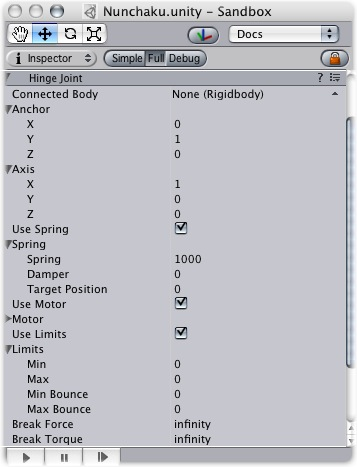
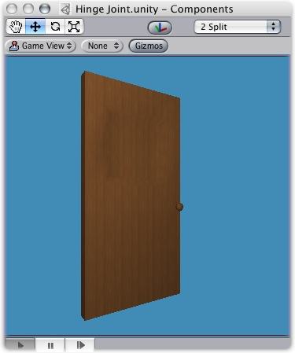
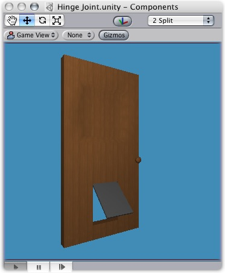
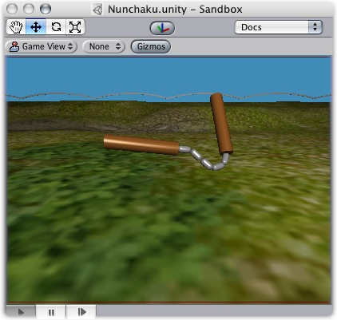
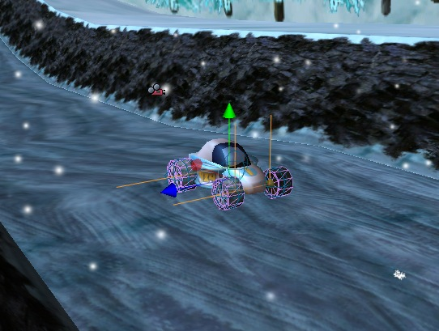

Previous
Previous
The Hinge Joint groups together 2 Rigidbodies, constraining them to move like they are connected by a hinge. It is perfect for doors, but can also be used to model chains, pendulums, etc.
|  |
The Hinge Joint
Properties
| Property: | Function: |
|---|---|
| Optional reference to the Rigidbody that the joint is dependent upon. If not set, the joint connects to the world. | |
| The Position of the anchor around which the body swings. The Position is defined in local space. | |
| The Direction of the axis around which the body swings. The Axis is defined in local space. | |
| Spring makes the rigid body attempt to stay in a specific angle compared to its connected body. | |
| The force the object asserts to move into the position. | |
| the higher this value, the more the object will slow down. | |
| Target angle of the spring. The spring pulls towards this angle measured in degrees. | |
| The motor makes the object spin around. | |
| The speed the object tries to attain. | |
| The force applied in order to attain the speed. | |
| If enabled, the motor is never used to brake the spinning, only accelerate it. | |
| If enabled, the angle of the hinge will be restricted within the Min & Max values. | |
| The lowest angle the rotation can go. | |
| The highest angle the rotation can go. | |
| How much the object bounces when it hits the minimum stop. | |
| How much the object bounces when it hits the maximum stop. | |
| The force that needs to be applied for this joint to break. | |
| The torque that needs to be applied for this joint to break. |
Details
A single Hinge Joint should be applied to an object per desired hinge. The hinge will rotate at the point specified by the Anchor property, moving around the specified Axis property. You DO NOT need to assign a Game Object to the joint's Connected Body property. You should only assign a Game Object to the Connected Body property if you want the joint's Transform to be dependent on the attached object's Transform.
Think about how the hinge of a door works. The Axis in this case is up, positive along the Y axis. The Anchor is placed somewhere at the intersection between door and wall. You would not need to assign the wall to the Connected Body, because the joint will be connected to the world by default.
|  |
A practical Hinge Joint with no Connected Body
Now think about a doggy door hinge. The doggy door's Axis would be sideways, positive along the relative X axis. The main door should be assigned as the Connected Body, so the doggy door's hinge is dependent on the main door's Transform.
|  |
A practical Hinge Joint with a proper Connected Body
Chains
Multiple Hinge Joints can also be strung together to create a chain. Add a joint to each link in the chain, and attach the next link as a Connected Body. The result should be similar to the following picture.
|  |
A Nunchaku made exclusively with primitives and Hinge Joints
Vehicles
Hinge Joints can be implemented as axles on vehicles, as seen here in Forest Johnson's racing game. However, it's often better just to use a Wheel Collider for vehicles.
|  |
Hints
- You do not need to assign a Connected Body to your joint for it to work.
- Use Break Force in order to make dynamic damage systems. This is really cool as it allows the player to break a door off its hinge by blasting it with a rocket launcher or running into it with a car.
- The Spring, Motor, and Limits properties allow you to fine-tune your joint's behaviors.